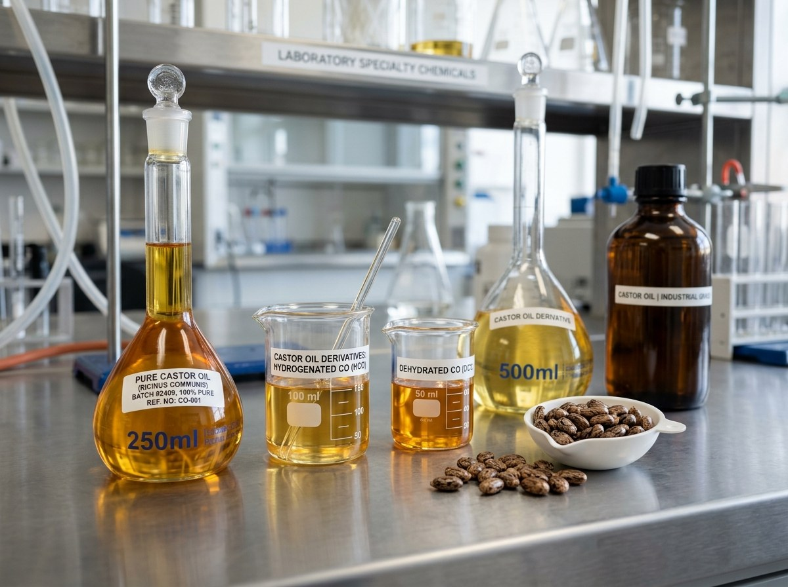
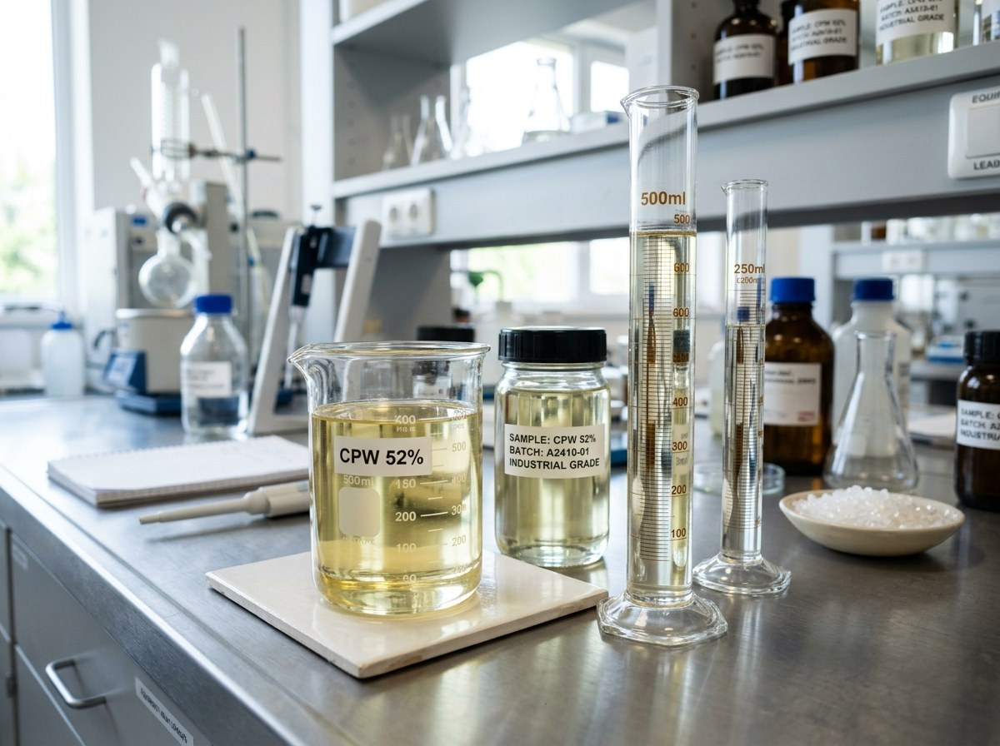
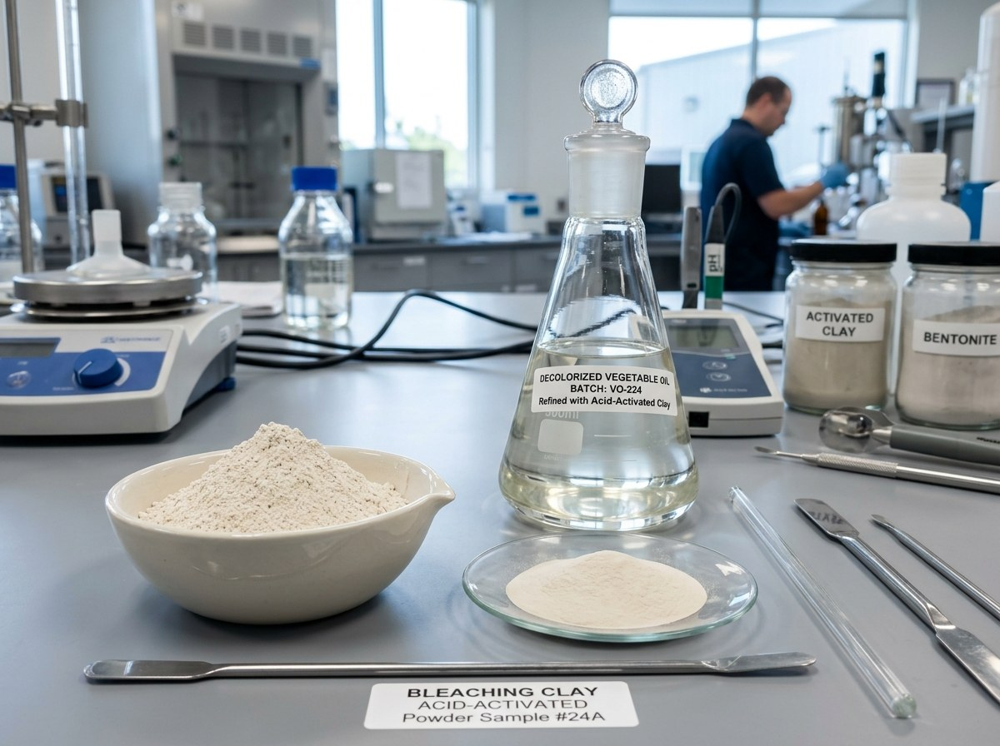

Castor Oil & Derivatives · Chlorinated Paraffin Wax · Bleaching Clay
GOS Chemicals (Gujarat Oleo & Specialty Chemicals) manufactures Castor Oil & Derivatives in India, undertakes custom chemical manufacturing, and supplies industrial chemicals to global B2B buyers.

Core ManufacturingFirst Special Grade (FSG), Commercial Grade, Hydrogenated Castor Oil, DCO, and 12-HSA manufactured in India for global industrial buyers.
View Details →
Core SupplyHigh-grade CPW plasticizer and flame retardant additive supplied across 40%–70% chlorine grades for PVC, rubber, and paint applications.
View Details →
Core SupplyAcid-activated bleaching earth for edible oil refining, mineral oil purification, and industrial fluid decolorization.
View Details →Beyond our core product lines, GOS Chemicals provides contract synthesis and custom chemical manufacturing tailored to your exact industrial specifications.
Learn More About Custom ManufacturingAlkyd resins, plasticizers, CPW, paint driers, and solvent additives engineered for industrial coatings and decorative paints.
Coagulants, biocides, oxygen scavengers, and specialty formulations for municipal and industrial effluent treatment.
Flotation reagents, xanthates, and mineral processing chemicals for extraction and ore refinement facilities.
Sizing agents, AKD wax emulsions, dry strength resins, and processing auxiliaries for paper and fabric manufacturing.
Acid-activated bleaching earth and clarifying agents for palm, sunflower, soy, and specialty oil purification.
Castor oil derivatives, extreme pressure additives, and synthetic intermediates for high-performance greases and coolants.
We operate our own production facilities, giving us direct control over quality, capacity, and lead times.
Our team has hands-on technical knowledge of every product we manufacture — we understand the chemistry, not just the commerce.
We work to your specifications. Whether you need a standard grade or a custom formulation, we match the product to your process requirements.
We provide complete documentation including Certificate of Analysis (COA), Material Safety Data Sheet (MSDS), and any additional paperwork your compliance or import process requires.
We handle export logistics, packaging standards, and regulatory documentation for international shipments.
You deal directly with people who know the product and the process — no layers of brokers or agents in between.
We supply First Special Grade (FSG), Commercial Grade, Hydrogenated Castor Oil (HCO / Castor Wax), Dehydrated Castor Oil (DCO), and 12-Hydroxystearic Acid (12-HSA). Custom specifications and technical data sheets are available upon request.
We supply CPW with chlorine content ranging from 40% to 70%, with 52% being our standard commercial grade. Custom chlorine concentrations and viscosity grades can be produced based on buyer requirements.
Our acid-activated bentonite bleaching earth is primarily used for the decolorization and purification of edible oils (palm, soybean, sunflower, rapeseed), mineral oils, transformer oils, and biodiesel feedstocks.
Yes. We regularly supply chemical buyers across Asia, the Middle East, Africa, Europe, and the Americas. We handle export documentation, packaging compliant with international shipping regulations, and port logistics from India.
Tell us what you need — product, specification, quantity, and destination — and our export team will respond promptly with pricing and technical data.
Request a Quote